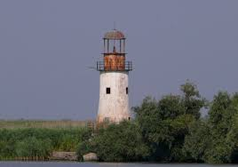
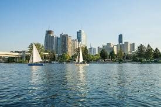

Lungime: 2.857 km
Izvor: Munții Pădurea Neagră (Germania), în apropiere de Donaueschingen, unde râurile Brigach și Breg se unesc.
Vărsare: Marea Neagră, prin Delta Dunării (România și Ucraina).
Bazin hidrografic: 817.000 km².
Debitul mediu: 6.500 m³/s la vărsare.

Patrimoniu UNESCO din 1991.
Cea mai bine conservată deltă din Europa, adăpostind peste 5.400 de specii de floră și faună.
Canale și lacuri importante: Sulina, Chilia, Sfântu Gheorghe.
Germania: Ulm, Regensburg, Passau.
Austria: Linz, Viena.
Slovacia: Bratislava.
Ungaria: Budapesta.
Serbia: Novi Sad, Belgrad.
România: Drobeta-Turnu Severin, Giurgiu, Brăila, Galați, Tulcea.
Bulgaria: Ruse, Vidin.
Ucraina: Izmail.
Porțile de Fier I și II (Serbia – România) – una dintre cele mai mari hidrocentrale de pe Dunăre.
Alte baraje importante: Freudenau (Austria), Gabcikovo (Slovacia).